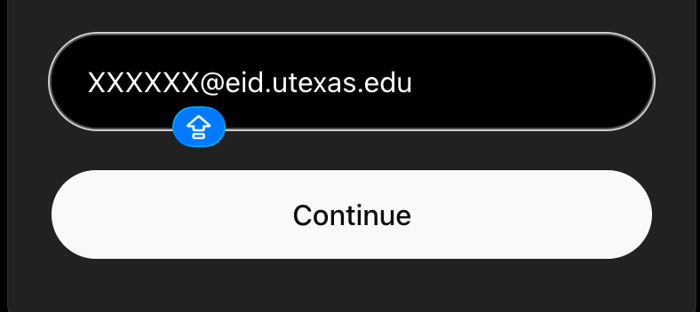
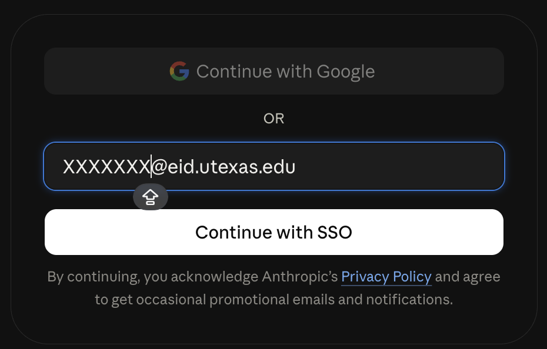
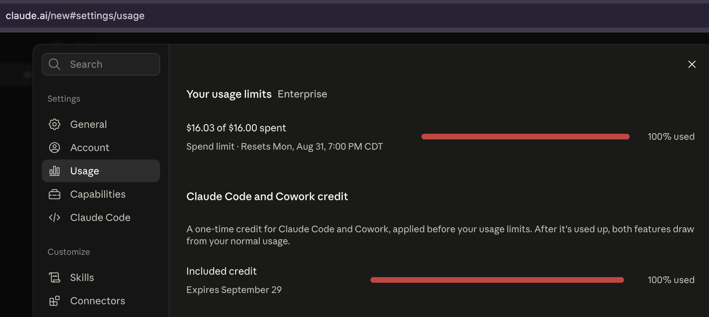

用你的 EID 邮箱（比如说 xxxxx@eid.utexas.edu）登陆就可以使用。
UT students, faculty, and staff get free access to enterprise ChatGPT and Claude through their EID email — just log in with your @eid.utexas.edu address.
UT-provided GPT includes access to Codex.

UT GPT — Codex access
UT-provided Claude includes access to Claude Code.

UT Claude — login with EID email

UT Claude — Claude Code access
内容来源: UT AI Services, 用户分享 | 更新时间: 2025年8月
(Sources: UT AI Services, community shared info | Last Updated: August 2025)
官方最新信息请以 UT AI Services 为准
(For official latest info, refer to UT AI Services)